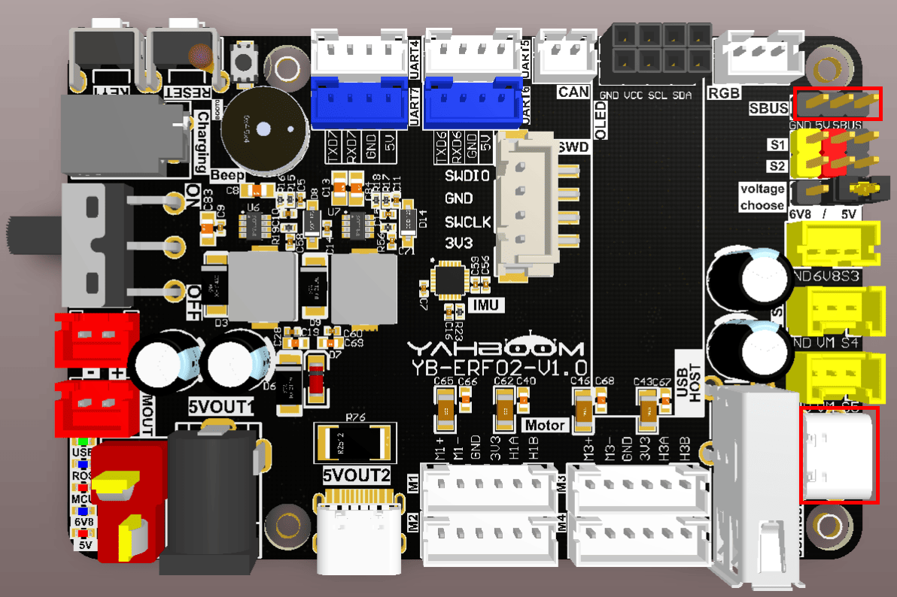
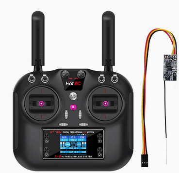
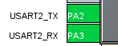
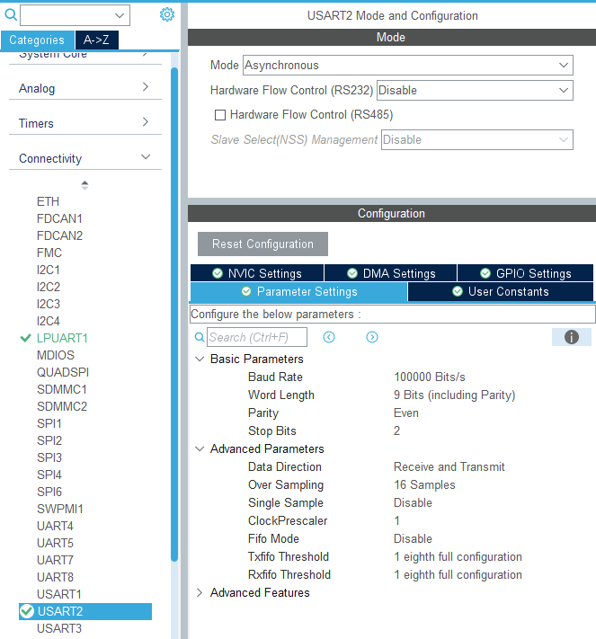
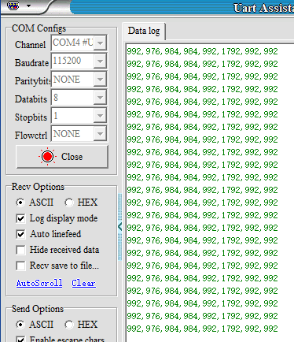

Пульт радиоуправления авиамоделью по SBUS
- Цель эксперимента
- Подключение оборудования
- Анализ основного кода
- Компиляция, загрузка и прошивка firmware
- Результаты эксперимента
1. Цель эксперимента
Используя функцию последовательного порта платы управления STM32, изучить приём и разбор данных SBUS.
2. Подключение оборудования
Как показано на рисунке ниже, плата управления STM32 имеет встроенный интерфейс SBUS, но дополнительно нужно подключить приёмник SBUS. Приёмник SBUS и пульт радиоуправления авиамоделью нужно подготовить самостоятельно.
Подключите USB-кабель Type-C к компьютеру и к порту USB Connect на плате управления STM32.
Примечание: интерфейс SBUS имеет определённое направление подключения. Подключайте в соответствии с шелкографией на плате управления: GND — к земле, 5V — к питанию (VCC), SBUS — к сигнальной линии.
Схема подключения пульта радиоуправления авиамоделью и приёмника SBUS

3. Анализ основного кода
Путь к исходному коду программы:
Board_Samples/STM32_Samples/SBus
В соответствии с назначением выводов, сигнальный вывод SBUS подключён к PA3 (USART2_RX). Для соответствия требованиям связи SBUS в аппаратную схему добавлена инвертирующая цепь. Последовательный порт 2 инициализируется со скоростью передачи 100000 бит/с, длиной данных 9, 2 стоп-битами, чётным паритетом (even parity) и аппаратным управлением потоком None. Также необходимо включить прерывание приёма последовательного порта.



void MX_USART2_UART_Init(void)
{
huart2.Instance = USART2;
huart2.Init.BaudRate = 100000;
huart2.Init.WordLength = UART_WORDLENGTH_9B;
huart2.Init.StopBits = UART_STOPBITS_2;
huart2.Init.Parity = UART_PARITY_EVEN;
huart2.Init.Mode = UART_MODE_TX_RX;
huart2.Init.HwFlowCtl = UART_HWCONTROL_NONE;
huart2.Init.OverSampling = UART_OVERSAMPLING_16;
huart2.Init.OneBitSampling = UART_ONE_BIT_SAMPLE_DISABLE;
huart2.Init.ClockPrescaler = UART_PRESCALER_DIV1;
huart2.AdvancedInit.AdvFeatureInit = UART_ADVFEATURE_NO_INIT;
if (HAL_UART_Init(&huart2) != HAL_OK)
{
Error_Handler();
}
if (HAL_UARTEx_SetTxFifoThreshold(&huart2, UART_TXFIFO_THRESHOLD_1_8) !=
HAL_OK)
{
Error_Handler();

}
if (HAL_UARTEx_SetRxFifoThreshold(&huart2, UART_RXFIFO_THRESHOLD_1_8) !=
HAL_OK)
{
Error_Handler();
}
if (HAL_UARTEx_DisableFifoMode(&huart2) != HAL_OK)
{
Error_Handler();
}
}
Включение функции прерывания приёма последовательного порта 2.
HAL_NVIC_SetPriority(USART2_IRQn, 0, 0);
HAL_NVIC_EnableIRQ(USART2_IRQn);
Инициализация SBUS и включение прерывания приёма.
void SBUS_Init(void)
{
printf("start\n");
HAL_UART_Receive_IT(&huart2, (uint8_t *)&g_rx_temp, 1);
}
Чтение принятых данных в прерывании последовательного порта.
void HAL_UART_RxCpltCallback(UART_HandleTypeDef *huart)
{
if (huart == &huart2)
{
uint8_t rx_data = g_rx_temp;
HAL_UART_Receive_IT(&huart2, (uint8_t *)&g_rx_temp, 1);
SBUS_Reveive(rx_data);
}
}
Шина (BUS) принимает и обрабатывает данные. Если они соответствуют протоколу приёма SBUS, соответствующие данные извлекаются в sbus_data.
void SBUS_Reveive(uint8_t rx_data)
{
uint8_t data = rx_data;
// If the protocol start flag is met, data is received
if (sbus_start == 0 && data == SBUS_START)
{
sbus_start = 1;
sbus_new_cmd = 0;
sbus_buf_index = 0;
inBuffer[sbus_buf_index] = data;
inBuffer[SBUS_RECV_MAX - 1] = 0xff;
}
else if (sbus_start)
{
sbus_buf_index++;
inBuffer[sbus_buf_index] = data;
}
// Finish receiving a frame of data
if (sbus_start & (sbus_buf_index >= (SBUS_RECV_MAX - 1)))
{
sbus_start = 0;
if (inBuffer[SBUS_RECV_MAX - 1] == SBUS_END)
{
memcpy(sbus_data, inBuffer, SBUS_RECV_MAX);
sbus_new_cmd = 1;
}
}
}
Разбор данных sbus_data для получения значений шестнадцати каналов.
static int SBUS_Parse_Data(void)
{
g_sbus_channels[0] = ((sbus_data[1] | sbus_data[2] << 8) & 0x07FF);
g_sbus_channels[1] = ((sbus_data[2] >> 3 | sbus_data[3] << 5) & 0x07FF);
g_sbus_channels[2] = ((sbus_data[3] >> 6 | sbus_data[4] << 2 | sbus_data[5]
<< 10) & 0x07FF);
g_sbus_channels[3] = ((sbus_data[5] >> 1 | sbus_data[6] << 7) & 0x07FF);
g_sbus_channels[4] = ((sbus_data[6] >> 4 | sbus_data[7] << 4) & 0x07FF);
g_sbus_channels[5] = ((sbus_data[7] >> 7 | sbus_data[8] << 1 | sbus_data[9]
<< 9) & 0x07FF);
g_sbus_channels[6] = ((sbus_data[9] >> 2 | sbus_data[10] << 6) & 0x07FF);
g_sbus_channels[7] = ((sbus_data[10] >> 5 | sbus_data[11] << 3) & 0x07FF);
#ifdef ALL_CHANNELS
g_sbus_channels[8] = ((sbus_data[12] | sbus_data[13] << 8) & 0x07FF);
g_sbus_channels[9] = ((sbus_data[13] >> 3 | sbus_data[14] << 5) & 0x07FF);
g_sbus_channels[10] = ((sbus_data[14] >> 6 | sbus_data[15] << 2 |
sbus_data[16] << 10) & 0x07FF);
g_sbus_channels[11] = ((sbus_data[16] >> 1 | sbus_data[17] << 7) & 0x07FF);
g_sbus_channels[12] = ((sbus_data[17] >> 4 | sbus_data[18] << 4) & 0x07FF);
g_sbus_channels[13] = ((sbus_data[18] >> 7 | sbus_data[19] << 1 |
sbus_data[20] << 9) & 0x07FF);
g_sbus_channels[14] = ((sbus_data[20] >> 2 | sbus_data[21] << 6) & 0x07FF);
g_sbus_channels[15] = ((sbus_data[21] >> 5 | sbus_data[22] << 3) & 0x07FF);
#endif
// Security check, check if the connection is lost or the data is wrong
// Security detection to check for lost connections or data errors
failsafe_status = SBUS_SIGNAL_OK;
if (sbus_data[23] & (1 << 2))
{
failsafe_status = SBUS_SIGNAL_LOST;
printf("SBUS_SIGNAL_LOST\n");
// lost contact errors Remote control lost contact error
}
else if (sbus_data[23] & (1 << 3))
{
failsafe_status = SBUS_SIGNAL_FAILSAFE;
printf("SBUS_SIGNAL_FAILSAFE\n");
// data loss error data loss error
}
return failsafe_status;
}
Затем вывести значения каналов.
static void print_data(void)
{
static int print_count = 0;
print_count++;
if (print_count < 10)
{
return;
}
print_count = 0;
#if SBUS_ALL_CHANNELS
printf("%d,%d,%d,%d,%d,%d,%d,%d,%d,%d,%d,%d,%d,%d,%d,%d\r\n",
g_sbus_channels[0], g_sbus_channels[1], g_sbus_channels[2],
g_sbus_channels[3], g_sbus_channels[4], g_sbus_channels[5],
g_sbus_channels[6], g_sbus_channels[7], g_sbus_channels[8],
g_sbus_channels[9], g_sbus_channels[10], g_sbus_channels[11],
g_sbus_channels[12], g_sbus_channels[13], g_sbus_channels[14],
g_sbus_channels[15]);
#else
printf("SBus: %d,%d,%d,%d,%d,%d,%d,%d\r\n",
g_sbus_channels[0], g_sbus_channels[1], g_sbus_channels[2],
g_sbus_channels[3], g_sbus_channels[4],g_sbus_channels[5],
g_sbus_channels[6], g_sbus_channels[7]);
#endif
}
Функция SBUS_Handle вызывается каждые 10 миллисекунд, чтобы проверить, разобраны ли какие-либо новые данные, и, если да, вывести их.
void App_Handle(void)
{
SBUS_Init();
while (1)
{
SBUS_Handle();
App_Led_Mcu_Handle();
HAL_Delay(10);
}
}
void SBUS_Handle(void)
{
if (sbus_new_cmd)
{
int res = SBUS_Parse_Data();
sbus_new_cmd = 0;
if (res) return;
print_data();
}
}
4. Компиляция, загрузка и прошивка firmware
Выберите проект для компиляции в окне управления файлами STM32CUBEIDE и нажмите кнопку компиляции на панели инструментов, чтобы начать компиляцию.
Если ошибок и предупреждений нет, компиляция завершена успешно.
Нажмите и удерживайте кнопку BOOT0, затем нажмите кнопку RESET для перезагрузки, отпустите кнопку BOOT0, чтобы войти в режим прошивки через последовательный порт. Затем используйте утилиту прошивки через последовательный порт, чтобы записать firmware на плату.
Если у вас есть ST-Link или J-Link, вы также можете прошить firmware в один клик прямо из STM32CUBEIDE — это более удобно и быстро.
5. Результаты эксперимента
Светодиод MCU_LED мигает каждые 200 миллисекунд.
Откройте программу для работы с последовательным портом (конкретные параметры показаны на рисунке ниже) — и вы увидите, что в терминале постоянно печатаются данные каждого канала пульта радиоуправления авиамоделью. Когда вы вручную двигаете стик или кнопку на пульте радиоуправления, данные соответствующим образом изменяются.


